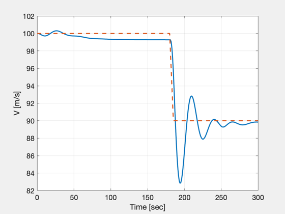
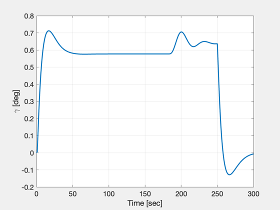
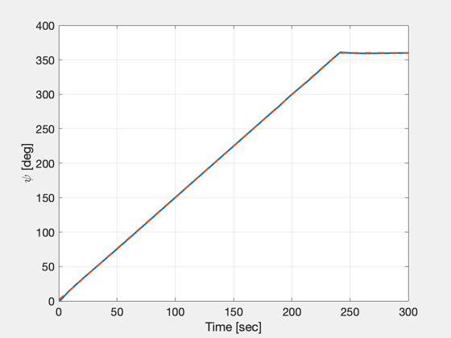
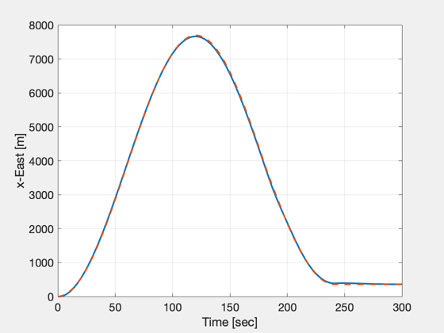
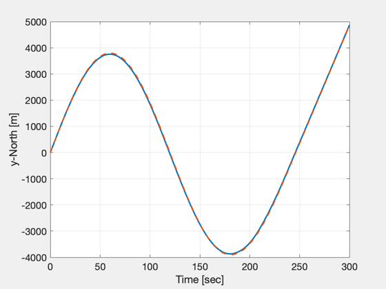
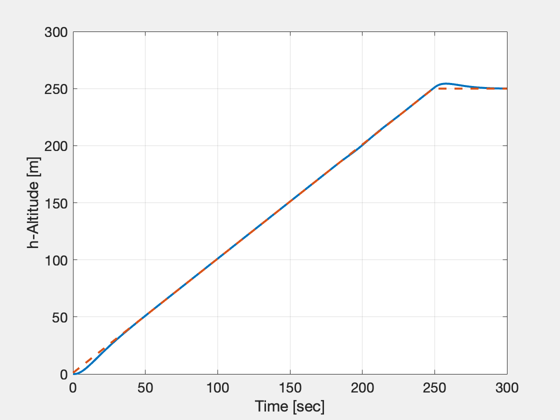
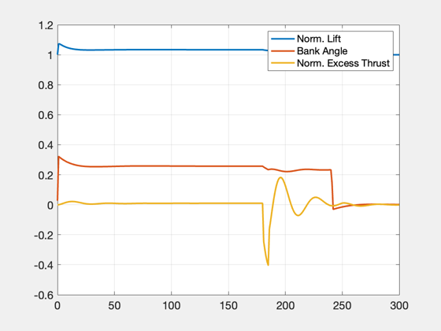
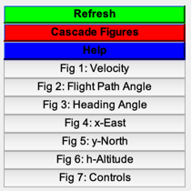

Script to simulate aircraft trajectory control
You specify the initial state, the simulation time, the control gains, and the maneuver to be performed. ------------------------------------------------------------------------ See also AircraftPointMassCLPSim, Ramp, Figui ------------------------------------------------------------------------
Contents
%-------------------------------------------------------------------------- % Copyright (c) 2007 Princeton Satellite Systems, Inc. % All Rights Reserved. %-------------------------------------------------------------------------- clear data
User inputs
time vector
dT = 1; t = 0:dT:300; nt = length(t);
initial state
v0 = 100; psi0 = 0; gama0 = 0; h0 = 0; x0 = [v0;gama0;psi0;0;0;h0;0];
Define maneuver parameters
hT = -1; % altitude ramp start time dH = 250; % altitude change hDot = 1; % altitude change rate vT = 180; % velocity ramp start time dV = -10; % velocity change vDot = 2; % velocity change rate psiT = -1; % heading ramp start time dPsi = 2*pi; % heading change psiDot = .026; % heading change rate
CONTROL GAINS
wn = .1; zeta = 0.8; data.Kh = [2*wn*zeta, wn^2]; % altitude control gains data.KL = [.1, .005]; % lateral control gains data.Ks = [.25, .005]; % longitudinal control gains
constant parameters
data.tau = 5; data.g = 9.81; data.a = zeros(3,1); data.W = zeros(3,1);
Generate desired ABSOLUTE trajectory
hCmd = Ramp( t, hT, h0, h0+dH, hDot ); VCmd = Ramp( t, vT, v0, v0+dV, vDot ); psiCmd = Ramp( t, psiT, psi0, psi0+dPsi, psiDot ); cmdRef = [hCmd;VCmd;psiCmd];
RUN Simulation
[xs,us,xd,cmd] = AircraftPointMassCLPSim( x0, [hCmd;VCmd;psiCmd], t, data ); fs=[]; kR2D = 180/pi;
PLOTS
fs(end+1) = figure('name','Velocity'); plot(t,xs(1,:),t,VCmd,'--','linewidth',2), grid on, set(gca,'xlim',[0 t(end)],'fontsize',14), ylabel('V [m/s]'), xlabel('Time [sec]') fs(end+1) = figure('name','Flight Path Angle'); plot(t,xs(2,:)*kR2D,'linewidth',2), grid on, set(gca,'xlim',[0 t(end)],'fontsize',14), ylabel('\gamma [deg]'), xlabel('Time [sec]') fs(end+1) = figure('name','Heading Angle'); plot(t,xs(3,:)*kR2D,t,psiCmd*kR2D,'--','linewidth',2), grid on, set(gca,'xlim',[0 t(end)],'fontsize',14), ylabel('\psi [deg]'), xlabel('Time [sec]') fs(end+1) = figure('name','x-East'); plot(t,xs(4,:),t,cmd(4,:),'--','linewidth',2), grid on, set(gca,'xlim',[0 t(end)],'fontsize',14), ylabel('x-East [m]'), xlabel('Time [sec]') fs(end+1) = figure('name','y-North'); plot(t,xs(5,:),t,cmd(5,:),'--','linewidth',2), grid on, set(gca,'xlim',[0 t(end)],'fontsize',14), ylabel('y-North [m]'), xlabel('Time [sec]') fs(end+1) = figure('name','h-Altitude'); plot(t,xs(6,:),t,hCmd,'--','linewidth',2), grid on, set(gca,'xlim',[0 t(end)],'fontsize',14), ylabel('h-Altitude [m]'), xlabel('Time [sec]') fs(end+1) = figure('name','Controls'); plot(t,us,'linewidth',2), grid on, set(gca,'xlim',[0 t(end)],'fontsize',14), legend('Norm. Lift','Bank Angle','Norm. Excess Thrust') Figui %-------------------------------------- % $Id: ab92c758b420c2a30e4e86149189ac121b317e7b $       